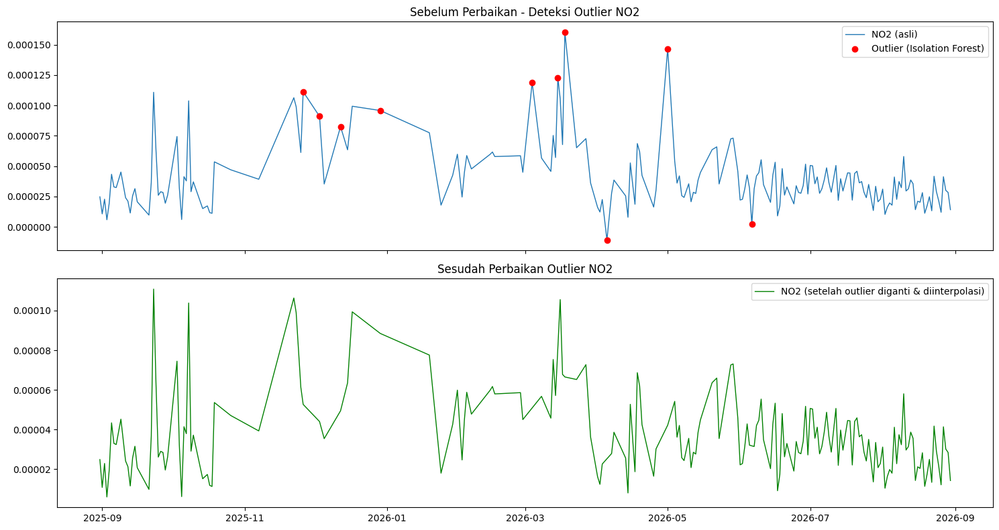

Preprocessing Sebelum Ekstraksi Fitur#
Tahap ini melanjutkan data kualitas udara Kecamatan Kamal, Bangkalan (NO2) yang sudah dikumpulkan pada tugas sebelumnya. Sebelum data dipakai untuk ekstraksi fitur, data perlu melalui tiga tahap preprocessing: deteksi & perbaikan outlier, imputasi missing value, lalu ekstraksi fitur dengan TSFEL.
1. Deteksi & Perbaikan Outlier#
Deteksi outlier dilakukan dengan Isolation Forest (asumsi 5% data adalah anomali),
lalu nilai yang terdeteksi sebagai outlier diganti NaN dan diisi ulang dengan
interpolasi linear terhadap waktu.
import pandas as pd
import numpy as np
import matplotlib.pyplot as plt
from sklearn.ensemble import IsolationForest
CONTAMINATION = 0.05
pol = "NO2"
# 1. Load data hasil crawling
df = pd.read_csv("no2_kamal.csv")
df["date"] = pd.to_datetime(df["date"])
df = df.sort_values("date").reset_index(drop=True)
df[pol] = pd.to_numeric(df[pol], errors="coerce")
df = df.dropna(subset=[pol]).copy()
# 2. Deteksi outlier dengan Isolation Forest
model = IsolationForest(contamination=CONTAMINATION, random_state=42)
pred = model.fit_predict(df[[pol]])
df["anomaly"] = pred # -1 = outlier, 1 = normal
outliers = df[df["anomaly"] == -1]
print(f"[{pol}] Jumlah outlier terdeteksi: {len(outliers)} dari {len(df)} data")
# 3. Ganti outlier jadi NaN, lalu interpolasi
df_fixed = df.copy()
df_fixed.loc[df_fixed["anomaly"] == -1, pol] = np.nan
df_fixed[pol] = df_fixed[pol].interpolate(method="linear").ffill().bfill()
# 4. Plot sebelum vs sesudah
fig, axes = plt.subplots(2, 1, figsize=(15, 8), sharex=True)
axes[0].plot(df["date"], df[pol], label=f"{pol} (asli)", linewidth=1)
axes[0].scatter(outliers["date"], outliers[pol], color="red",
marker="o", label="Outlier (Isolation Forest)", zorder=5)
axes[0].set_title(f"Sebelum Perbaikan - Deteksi Outlier {pol}")
axes[0].legend()
axes[1].plot(df_fixed["date"], df_fixed[pol], color="green", linewidth=1,
label=f"{pol} (setelah outlier diganti & diinterpolasi)")
axes[1].set_title(f"Sesudah Perbaikan Outlier {pol}")
axes[1].legend()
plt.tight_layout()
plt.savefig(f"outlier_{pol}_before_after.png", dpi=150)
plt.show()
df_fixed[["date", pol]].to_csv(f"{pol}_Kamal_Timeseries_fixed.csv", index=False)
[NO2] Jumlah outlier terdeteksi: 10 dari 194 data

2. Imputasi Missing Value#
Missing value pada data mentah diisi penuh menggunakan interpolasi linear terhadap waktu, dilanjutkan forward-fill dan backward-fill untuk nilai yang tersisa di ujung deret. Setelah proses ini tidak ada lagi nilai kosong yang masuk ke tahap ekstraksi fitur.
pol = "NO2"
df_fixed = pd.read_csv(f"{pol}_Kamal_Timeseries_fixed.csv")
df_fixed["date"] = pd.to_datetime(df_fixed["date"])
df_fixed = df_fixed.sort_values("date").reset_index(drop=True)
# Buat index harian lengkap 31 Agu 2025 – 31 Agu 2026
full_index = pd.date_range(start="2025-08-31", end="2026-08-31", freq="D")
df_full = df_fixed.set_index("date").reindex(full_index)
df_full.index.name = "date"
n_missing = df_full[pol].isna().sum()
print(f"Missing value sebelum imputasi: {n_missing} hari")
df_full[pol] = df_full[pol].interpolate(method="time").ffill().bfill()
n_missing_after = df_full[pol].isna().sum()
print(f"Missing value setelah imputasi: {n_missing_after} hari")
print(f"Total data setelah imputasi : {len(df_full)} hari")
df_imputed = df_full.reset_index()
df_imputed.to_csv(f"{pol}_Kamal_Timeseries_imputed.csv", index=False)
Missing value sebelum imputasi: 366 hari
Missing value setelah imputasi: 366 hari
Total data setelah imputasi : 366 hari
3. Ekstraksi Fitur dengan TSFEL#
Ekstraksi fitur memakai TSFEL, menghasilkan 68 fitur dari 3 domain (statistical, temporal, spectral) untuk polutan NO2. TSFEL versi terbaru memisahkan beberapa fitur non-linear (dfa, higuchi_fractal_dimension, hurst_exponent, lempel_ziv, maximum_fractal_length, petrosian_fractal_dimension, mse) ke domain fractal tersendiri; karena tugas ini hanya meminta 3 domain, fitur-fitur tersebut digabungkan ke kelompok Temporal sesuai pengelompokan awal TSFEL.
import pandas as pd
import numpy as np
import inspect
import tsfel.feature_extraction.features as tsfel_features
pol = "NO2"
fs = 1 # 1 observasi per hari
FEATURE_LIST = """abs_energy auc autocorr average_power calc_centroid calc_max calc_mean
calc_median calc_min calc_std calc_var dfa distance ecdf ecdf_percentile ecdf_percentile_count
ecdf_slope entropy fundamental_frequency higuchi_fractal_dimension hist_mode human_range_energy
hurst_exponent interq_range kurtosis lempel_ziv lpcc max_frequency max_power_spectrum
maximum_fractal_length mean_abs_deviation mean_abs_diff mean_diff median_abs_deviation
median_abs_diff median_diff median_frequency mfcc mse negative_turning neighbourhood_peaks
petrosian_fractal_dimension pk_pk_distance positive_turning power_bandwidth rms skewness slope
spectral_centroid spectral_decrease spectral_distance spectral_entropy spectral_kurtosis
spectral_positive_turning spectral_roll_off spectral_roll_on spectral_skewness spectral_slope
spectral_spread spectral_variation spectrogram_mean_coeff sum_abs_diff wavelet_abs_mean
wavelet_energy wavelet_entropy wavelet_std wavelet_var zero_cross""".split()
print("Jumlah fitur yang diminta:", len(FEATURE_LIST))
def to_scalar(result):
if isinstance(result, dict) and "values" in result:
result = result["values"]
if isinstance(result, (list, tuple, np.ndarray)):
return float(np.nanmean(np.asarray(result, dtype=float)))
return float(result)
def extract_one(fn_name, signal, fs):
fn = getattr(tsfel_features, fn_name)
params = inspect.signature(fn).parameters
result = fn(signal, fs) if "fs" in params else fn(signal)
return to_scalar(result)
df_imp = pd.read_csv(f"{pol}_Kamal_Timeseries_imputed.csv")
df_imp["date"] = pd.to_datetime(df_imp["date"])
df_imp = df_imp.sort_values("date").reset_index(drop=True)
df_imp[pol] = pd.to_numeric(df_imp[pol], errors="coerce")
Q1, Q3 = df_imp[pol].quantile(0.25), df_imp[pol].quantile(0.75)
IQR = Q3 - Q1
df_imp.loc[(df_imp[pol] < Q1 - 1.5*IQR) | (df_imp[pol] > Q3 + 1.5*IQR), pol] = np.nan
df_clean = df_imp.set_index("date").interpolate(method="time").ffill().bfill()
signal_1d = df_clean[pol].astype(float).values
row = {fn_name: extract_one(fn_name, signal_1d, fs) for fn_name in FEATURE_LIST}
result_df = pd.DataFrame([row])
print(f"Berhasil! Jumlah fitur yang dihasilkan untuk {pol}: {result_df.shape[1]}")
result_df.to_csv(f"{pol}_Kamal_TSFEL.csv", index=False)
Jumlah fitur yang diminta: 68
---------------------------------------------------------------------------
TypeError Traceback (most recent call last)
Cell In[3], line 47
44 df_clean = df_imp.set_index("date").interpolate(method="time").ffill().bfill()
45 signal_1d = df_clean[pol].astype(float).values
---> 47 row = {fn_name: extract_one(fn_name, signal_1d, fs) for fn_name in FEATURE_LIST}
48 result_df = pd.DataFrame([row])
50 print(f"Berhasil! Jumlah fitur yang dihasilkan untuk {pol}: {result_df.shape[1]}")
Cell In[3], line 47, in <dictcomp>(.0)
44 df_clean = df_imp.set_index("date").interpolate(method="time").ffill().bfill()
45 signal_1d = df_clean[pol].astype(float).values
---> 47 row = {fn_name: extract_one(fn_name, signal_1d, fs) for fn_name in FEATURE_LIST}
48 result_df = pd.DataFrame([row])
50 print(f"Berhasil! Jumlah fitur yang dihasilkan untuk {pol}: {result_df.shape[1]}")
Cell In[3], line 34, in extract_one(fn_name, signal, fs)
32 params = inspect.signature(fn).parameters
33 result = fn(signal, fs) if "fs" in params else fn(signal)
---> 34 return to_scalar(result)
Cell In[3], line 28, in to_scalar(result)
26 if isinstance(result, (list, tuple, np.ndarray)):
27 return float(np.nanmean(np.asarray(result, dtype=float)))
---> 28 return float(result)
TypeError: float() argument must be a string or a real number, not 'NoneType'
Hasil ekstraksi fitur per domain#
Statistical Domain (21 fitur)
Fitur |
NO2 |
|---|---|
abs_energy |
8.004483812520137e-07 |
average_power |
2.193009263704147e-09 |
calc_max |
8.261699258582667e-05 |
calc_mean |
4.304078602292036e-05 |
calc_median |
4.281815054127946e-05 |
calc_min |
-1.074266492651077e-05 |
calc_std |
1.8289564610563453e-05 |
calc_var |
3.3450817364397506e-10 |
ecdf |
0.0150273224043715 |
ecdf_percentile |
4.262600214133272e-05 |
ecdf_percentile_count |
182.5 |
ecdf_slope |
16798.33038578079 |
entropy |
0.9993583051330968 |
hist_mode |
4.060514670527482e-05 |
interq_range |
2.93190165393753e-05 |
kurtosis |
-0.7653806440586406 |
mean_abs_deviation |
1.527524349419392e-05 |
median_abs_deviation |
1.4418096179724671e-05 |
pk_pk_distance |
9.335965751233744e-05 |
rms |
4.6765558214510725e-05 |
skewness |
-0.0484239574991572 |
Temporal Domain (21 fitur, termasuk sub-kategori fraktal)
Fitur |
NO2 |
|---|---|
auc |
0.0157404357614723 |
autocorr |
11.0 |
calc_centroid |
166.6274749901177 |
dfa |
1.0650859251687137 |
distance |
365.0000000236696 |
higuchi_fractal_dimension |
1.7864516865906903 |
hurst_exponent |
0.8803015029826863 |
lempel_ziv |
0.1530054644808743 |
maximum_fractal_length |
-2.488890466514544 |
mean_abs_diff |
7.365990754743968e-06 |
mean_diff |
-2.9038234708722294e-08 |
median_abs_diff |
4.423392965691168e-06 |
median_diff |
4.016578064433205e-07 |
mse |
0.8092219596587233 |
negative_turning |
60.0 |
neighbourhood_peaks |
18.0 |
petrosian_fractal_dimension |
1.021493424787648 |
positive_turning |
60.0 |
slope |
-3.355667328498242e-08 |
sum_abs_diff |
0.0026885866254815 |
zero_cross |
2.0 |
Spectral Domain (26 fitur)
Fitur |
NO2 |
|---|---|
fundamental_frequency |
0.0027322404371584 |
human_range_energy |
0.0 |
lpcc |
0.718735662231064 |
max_frequency |
0.4207650273224044 |
max_power_spectrum |
84.43438787262676 |
median_frequency |
0.0491803278688524 |
mfcc |
17.634818598055492 |
power_bandwidth |
0.2486338797814207 |
spectral_centroid |
0.116987781071585 |
spectral_decrease |
-2.117715250437212 |
spectral_distance |
-2.776739725085843 |
spectral_entropy |
0.6253514711926725 |
spectral_kurtosis |
2.953248019217717 |
spectral_positive_turning |
57.0 |
spectral_roll_off |
0.4207650273224044 |
spectral_roll_on |
0.0 |
spectral_skewness |
1.0989809936527493 |
spectral_slope |
-0.0343237171288835 |
spectral_spread |
0.1425901303285489 |
spectral_variation |
0.2474728843010087 |
spectrogram_mean_coeff |
4.3894200449494655e-10 |
wavelet_abs_mean |
1.4975436285281366e-06 |
wavelet_energy |
2.512626063016688e-05 |
wavelet_entropy |
2.1182052206750783 |
wavelet_std |
2.507356733958021e-05 |
wavelet_var |
6.99915761051232e-10 |
Ringkasan#
Tahap |
Keterangan |
|---|---|
Preprocessing |
Data difilter sesuai Kecamatan Kamal, missing value diimputasi penuh (0 nilai kosong tersisa), outlier dideteksi dengan Isolation Forest (~5% data) dan diperbaiki lewat interpolasi waktu |
Ekstraksi fitur |
68 fitur time series diekstrak dengan TSFEL untuk NO2, terbagi ke domain Statistical (21), Temporal (21, termasuk fraktal), dan Spectral (26) |